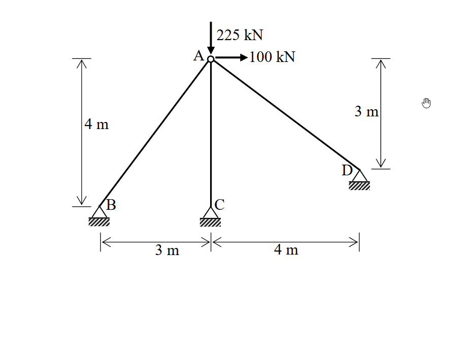

題目附圖（原始 .md 未內嵌，由 raw/solutions/ 自動補上）

考題編號：SA-2010-4
主分類： SA-U4-1 矩陣結構分析
副分類： SA-U4-2 桁架勁度矩陣
分析法： 直接勁度法 (Direct Stiffness Method)
標籤： 直接勁度法, 桁架, 節點變位, 勁度矩陣
1. 原始題目重述 (Problem Restatement)
如圖所示之桁架結構，其三個支承點 B、C、D 均為鉸支承，且 A 點承受一垂直向下載重 225 kN 及一水平向右載重 100 kN。假設各桿件之彈性模數與斷面積乘積均為常數值 $EA = 10000\text{ kN}$，請以直接勁度法（direct stiffness method）計算 A 點之水平變位與垂直變位，並解出桿件 BA 之軸力。（若以其他方法計算不予計分）（25 分）
2. 考題核心精神與出題者意圖 (Core Concepts & Examiner's Intent)
本題為純粹的直接勁度法 (Direct Stiffness Method) 手算題，測驗考生對於手算矩陣位移法的熟練度。
出題者的意圖在於：
- 幾何模型的建立：測驗考生是否能由給定的尺寸正確推算出各節點座標與構件長度（本題巧妙隱藏了 3-4-5 的畢氏定理直角三角形）。
- 總體勁度矩陣的組裝：僅有 A 點為自由節點（具備兩個自由度），考生需計算三根桿件對於 A 點的勁度矩陣貢獻並疊加。
- 巧思的數據設計：本題的斜撐桿件 AB 與 AD，其勁度矩陣的非對角線元素剛好正負抵消，使得組裝後的矩陣為對角矩陣，可以直接求解位移而不需解二元一次聯立方程式。這是出題者的貼心設計，同時也獎勵觀念正確、計算仔細的考生。
- 回代求內力：利用求得的節點位移，代回桿件受力公式正確求出指定桿件（BA 桿）的軸力，並考驗壓力與張力符號之判斷。
3. 解題戰略地圖與陷阱分析 (Strategic Roadmap & Trap Analysis)
解題戰略：
- 設定座標系：以 C 點為原點，標定 A、B、D 點座標，計算各桿長度與方向餘弦 (c, s)。
- 計算各桿單元勁度矩陣貢獻：套用桁架勁度矩陣公式 $\frac{EA}{L}\begin{bmatrix}c^2 & cs \\ cs & s^2\end{bmatrix}$，分別求出桿件 AB、AC、AD 對於節點 A 的勁度矩陣。
- 組裝總體勁度矩陣並求解：將三桿貢獻相加組成總體勁度矩陣 $\mathbf{K}_A$，建立 $\mathbf{K}_A \mathbf{D}_A = \mathbf{F}_A$ 求解 $u_A$ 與 $v_A$。
- 計算桿件內力：將求得的位移代入桿端力方程式求 BA 桿軸力。
關鍵陷阱：
- 方向餘弦 (c, s) 計算錯誤：自由節點與支承節點的順序易搞混，建議統一以「自由節點 A 指向支承節點」定義向量，這樣方向餘弦與位移計算不易出錯。
- 組裝勁度矩陣的交叉項計算：AB 桿與 AD 桿的 $cs$ 乘積一正一負，若符號判斷錯誤導致交叉項未抵消，解聯立方程式將變得非常複雜且易算錯。
- 外力符號：外力向下 225 kN 在座標系中必須寫為 $-225$，若忽略負號會導致垂直變位與後續內力全錯。
- 桿件內力張壓判斷：由位移求內力時，需注意正負號所代表的物理意義（通常正值為張力，負值為壓力）。
3.5 變數層次分析 (Variable Hierarchy Analysis)
最終目標
計算出自由節點 A 之水平與垂直位移，並推算出桿件 BA 之軸力。
本題關鍵公式（依計算順序）
-
桿件幾何方向餘弦：
$$ c = \frac{x_j - x_i}{L}, \quad s = \frac{y_j - y_i}{L} $$ -
桁架單元對接點 $i$ 之勁度矩陣貢獻：
$$ \mathbf{K}_{i} = \frac{EA}{L} \begin{bmatrix} \boxed{c}^2 & \boxed{c}\boxed{s} \\ \boxed{c}\boxed{s} & \boxed{s}^2 \end{bmatrix} $$ -
節點力平衡方程（求位移）：
$$ \left( \sum \boxed{\mathbf{K}_i} \right) \begin{bmatrix} u_A \\ v_A \end{bmatrix} = \begin{bmatrix} F_x \\ F_y \end{bmatrix} $$ -
桁架桿件軸力（張力為正）：
$$ F_{axial} = \frac{EA}{L} \left[ \boxed{c}(\boxed{u_j} - \boxed{u_i}) + \boxed{s}(\boxed{v_j} - \boxed{v_i}) \right] $$
L1：題目直接給定
| 符號 | 數值 | 說明 |
|---|---|---|
| $EA$ | $10000 \text{ kN}$ | 桿件軸向剛度 |
| $F_x$ | $100 \text{ kN}$ | 節點 A 之水平向右外力 |
| $F_y$ | $-225 \text{ kN}$ | 節點 A 之垂直向下外力 |
L2：需知識點推導
座標與幾何參數
| 符號 | 公式／來源 | 卡關? |
|---|---|---|
| $(x_A, y_A)$ | 依圖建立座標系，如 $(0, 4)$ | |
| $L_i, c_i, s_i$ | $\sqrt{\Delta x^2 + \Delta y^2}$, $\Delta x/L$, $\Delta y/L$ | |
矩陣組裝與求解
| 符號 | 公式／來源 | 卡關? |
|---|---|---|
| $\mathbf{K}_A$ | 各桿件勁度矩陣貢獻疊加 | |
| $u_A, v_A$ | $\mathbf{K}_A \mathbf{D}_A = \mathbf{F}_A$ 解聯立 | |
| $F_{AB}$ | $F_{axial} = \frac{EA}{L}[c(\Delta u) + s(\Delta v)]$ | |
L3：深層知識（不懂就卡住）
| 知識點 | 說明 | 卡關? |
|---|---|---|
| 直接勁度法疊加原理 | 多個桿件交於一點時，該點之總體勁度為各桿單元勁度於該點自由度之總和。 | |
| 內力張壓判斷準則 | 以「由近端指向遠端」定義方向餘弦時，若位移差計算為 $(u_j-u_i)$ 與 $(v_j-v_i)$，則算出之軸力為正表張力，負表壓力。 |
4. 步驟化詳細計算過程 (Step-by-Step Detailed Calculation)
步驟 1：建立座標系與幾何參數
令節點 C 為原點 $(0, 0)$，由圖示尺寸推導各節點座標：
- 節點 A 座標：$(0, 4)$
- 節點 B 座標：$(-3, 0)$
- 節點 D 座標：$(4, 1)$
計算各桿件長度 $L$ 與幾何參數（方向餘弦 $c = \cos\theta, s = \sin\theta$）：
令向量由自由節點 A 指向支承節點 $i$：$\vec{v}_{Ai} = (x_i - x_A, y_i - y_A)$
-
桿件 AB：$\vec{v}_{AB} = (-3 - 0, 0 - 4) = (-3, -4)$
$L_{AB} = \sqrt{(-3)^2 + (-4)^2} = 5\text{ m}$
$c_{AB} = -3/5 = -0.6$, $\quad s_{AB} = -4/5 = -0.8$ -
桿件 AC：$\vec{v}_{AC} = (0 - 0, 0 - 4) = (0, -4)$
$L_{AC} = 4\text{ m}$
$c_{AC} = 0$, $\quad s_{AC} = -1$ -
桿件 AD：$\vec{v}_{AD} = (4 - 0, 1 - 4) = (4, -3)$
$L_{AD} = \sqrt{4^2 + (-3)^2} = 5\text{ m}$
$c_{AD} = 4/5 = 0.8$, $\quad s_{AD} = -3/5 = -0.6$
步驟 2：組裝節點 A 的總體勁度矩陣
單一桿件對節點 A 提供的勁度矩陣貢獻為：
$$ \mathbf{K}_A^{(i)} = \frac{EA}{L_i} \begin{bmatrix} c^2 & cs \\ cs & s^2 \end{bmatrix} $$
已知 $EA = 10000\text{ kN}$。
-
桿件 AB 的貢獻：
$$ \mathbf{K}_{A}^{AB} = \frac{10000}{5} \begin{bmatrix} (-0.6)^2 & (-0.6)(-0.8) \\ (-0.6)(-0.8) & (-0.8)^2 \end{bmatrix} = 2000 \begin{bmatrix} 0.36 & 0.48 \\ 0.48 & 0.64 \end{bmatrix} = \begin{bmatrix} 720 & 960 \\ 960 & 1280 \end{bmatrix} \text{ kN/m} $$ -
桿件 AC 的貢獻：
$$ \mathbf{K}_{A}^{AC} = \frac{10000}{4} \begin{bmatrix} 0 & 0 \\ 0 & (-1)^2 \end{bmatrix} = 2500 \begin{bmatrix} 0 & 0 \\ 0 & 1 \end{bmatrix} = \begin{bmatrix} 0 & 0 \\ 0 & 2500 \end{bmatrix} \text{ kN/m} $$ -
桿件 AD 的貢獻：
$$ \mathbf{K}_{A}^{AD} = \frac{10000}{5} \begin{bmatrix} 0.8^2 & (0.8)(-0.6) \\ (0.8)(-0.6) & (-0.6)^2 \end{bmatrix} = 2000 \begin{bmatrix} 0.64 & -0.48 \\ -0.48 & 0.36 \end{bmatrix} = \begin{bmatrix} 1280 & -960 \\ -960 & 720 \end{bmatrix} \text{ kN/m} $$
將三者相加，得到節點 A 的總體勁度矩陣 $\mathbf{K}_A$：
$$ \mathbf{K}_A = \begin{bmatrix} 720+0+1280 & 960+0-960 \\ 960+0-960 & 1280+2500+720 \end{bmatrix} = \begin{bmatrix} \mathbf{2000} & \mathbf{0} \\ \mathbf{0} & \mathbf{4500} \end{bmatrix} \text{ kN/m} $$
(策略註解：交叉項剛好正負抵消為 0，這代表水平向的力不會造成垂直變位，垂直向的力也不會造成水平變位，解題計算大幅簡化。)
步驟 3：求解節點變位
建立外力向量 $\mathbf{F}_A$：
$$ \mathbf{F}_A = \begin{bmatrix} F_x \\ F_y \end{bmatrix} = \begin{bmatrix} 100 \\ -225 \end{bmatrix} \text{ kN} $$
求解勁度方程式 $\mathbf{K}_A \mathbf{D}_A = \mathbf{F}_A$：
$$ \begin{bmatrix} 2000 & 0 \\ 0 & 4500 \end{bmatrix} \begin{bmatrix} u_A \\ v_A \end{bmatrix} = \begin{bmatrix} 100 \\ -225 \end{bmatrix} $$
解得：
$$ u_A = \frac{100}{2000} = \boxed{\mathbf{0.05 \text{ m}}} = 50 \text{ mm} \text{ (向右)} $$
$$ v_A = \frac{-225}{4500} = \boxed{\mathbf{-0.05 \text{ m}}} = -50 \text{ mm} \text{ (向下)} $$
步驟 4：計算桿件 BA 之軸力
桁架桿件軸力（張力為正）的計算公式為：
$$ F_{axial} = \frac{EA}{L} \left[ c(u_j - u_i) + s(v_j - v_i) \right] $$
以節點 A 為起點 ($i$)，節點 B 為終點 ($j$)：
- 位移：$u_A = 0.05$, $v_A = -0.05$ ; 支承端 $u_B = 0$, $v_B = 0$
- 方向餘弦（由 A 向 B）：$c = -0.6$, $s = -0.8$
代入數值：
$$ F_{AB} = \frac{10000}{5} \left[ (-0.6)(0 - 0.05) + (-0.8)(0 - (-0.05)) \right] $$
$$ F_{AB} = 2000 \times \left[ (-0.6)(-0.05) + (-0.8)(0.05) \right] $$
$$ F_{AB} = 2000 \times \left[ 0.03 - 0.04 \right] = 2000 \times (-0.01) = \boxed{\mathbf{-20 \text{ kN}}} $$
負號表示壓力 (Compression)。
5. 關鍵爭議點與進階探討 (Critical Issues & Advanced Discussion)
- 自由度選取的簡化：本題只有一個活動節點 A，其餘皆為鉸支承。若不熟悉直接勁度法組裝總體矩陣的疊加原理，可能會想要列出包含所有節點的 $8 \times 8$ 矩陣，這在手算考試中是極度浪費時間且容易出錯的。應直接針對未知自由度建立簡化之總體剛度矩陣。
- 對角矩陣之物理意義：本題的 $\mathbf{K}_A$ 出現非對角線元素為零的情況，這意味著結構在 A 點的水平與垂直勁度是「解耦 (uncoupled)」的。在工程實務上，這種設計（利用斜撐使得勁度矩陣交叉項消失）可以避免結構產生非預期的耦合位移。
- 單位檢查：計算出的位移為 $0.05 \text{ m}$，在土木結構中位移達 $50 \text{ mm}$ 算是合理偏大，但作為考試數值設計相當平易近人。軸力計算中若未將 $EA$ 的單位（kN）與長度單位（m）對齊，容易差三個數量級，考生在此需特別留意單位的一致性。